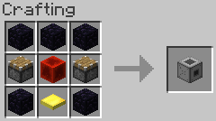
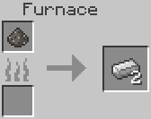
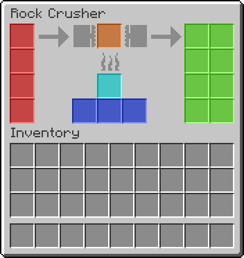

This mod adds a single solid fuel powered machine, the rock crusher, which crushes raw ore into crushed ore which can then be smelted into two ingots. Currently a limited list of the most common ores can be crushed: iron, gold, copper, tin, lead, silver, and uranium. The mod itself does not provide the later five ores, only the rock crusher recipes to crush them if they are available.
 The rock crusher interface is divided into five distinct areas: fuel input (BLUE), fuel processing (CYAN), raw ore input (RED), raw ore processing (ORANGE), and crushed ore output (GREEN). The machine draws ore and fuel from the input areas into the processing slots. Once in the corresponding processing slot the items can not be removed and will be lost if the machine is destroyed, similar to the loss of a piece of coal when a burning furnace is destroyed. After processing is finished, the raw ore will be deposited as crushed ore in the ore output slots where they can be retrieved.
